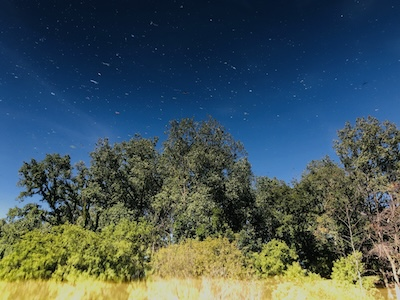
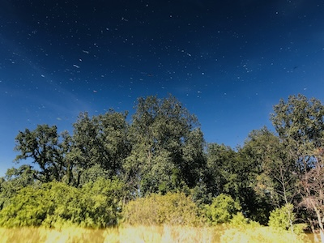
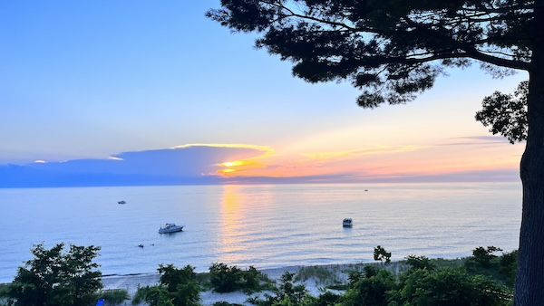
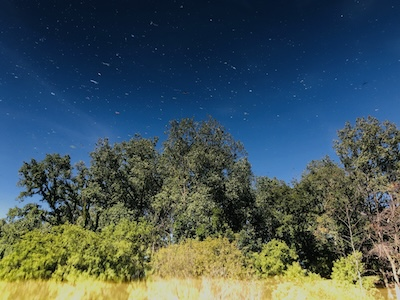
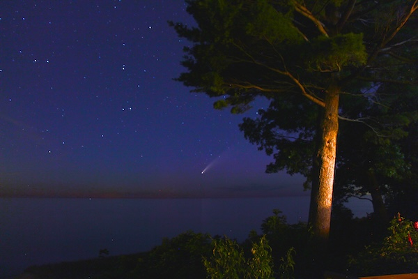

South Haven is a very special place for me. It's a small town on the western coast of Michigan about an hour drive from Grand Rapids and a 2 hour drive from Chicago. We started visiting in 2007, and in 2014 purchased the home we'd been renting for the previous seven years. We continued to live there in the summers until 2020 where we moved there for about a year. While these photos of the surrounding environment don't do the town justice, I still think they capture a little bit of what makes the town so special to me.
This is a view off of my back porch taken in Summer of 2023. This is how it looks for most of the year. There are usually a lot of deer that live in the brush below, but they dissapeared for a few years and only just came back this past summer. I always love this view because of how familiar and nostalgic it is. I've been seeing it my whole life and looking at it instantly takes me right back to those moments in the pandemic, when we bought the house, when we first visited, etc.

Same view in Fall of 2022. The orange and pink sky mixes so well with the red and orange leaves, but it's a bit hard to tell since most of the bluff is cut off. Even then, the plants there don't really turn red and orange like a lot of the trees around there do. They stay green and then shed their leaves after the first big snow, so it looks pretty vibrant up until around late November.

This is the view off the porch in Winter 2022. Every so often, usually in January, the lake freezes over to the bottom at the shore. It freezes over the waves as well and creates little ice caves to duck into. There's walkable ice for about 50 feet from the shoreline and it feels like another world entirely.

This is the same view but in the early Spring of 2021 after all the ice and snow melted. It looks a little bit desolate but I think it's really interesting how in just a month's time the entire bluff becomes super verdant and dense with plant life. I love how the fog makes finding the horizon a little bit difficult in the photo. It really gives it a haunting feeling.

Two photos from the Kal-Haven Trail. One is a photo of the gazebo that is now flooded by the Black River (2021). The other is a reflection in the river showing the trees above it (2019).


Two photos of South Haven in Fall. A red tree in my friend's front yard (2022) and a cleared swamp on the Kal-Haven Trail (2021). Unfortunately, these kinds of colors on trees haven't shown up in South Haven as often as they did about a decade ago due to shifting climates.
Two photos taken during the 2020 pandemic. The first is of some small blue flowers on the side of Baseline Road near Blue Star Highway. The second is of the Neowise Comet on August 11, 2020 from my back porch.